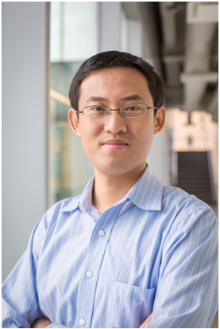

Keynote (09:45 am PDT)
Addressing Scalability Bottlenecks of DNN Training Through Hardware Heterogeneity: A View from the Perspectives of Memory Capacity and Energy Consumption
Dong Li, Department of Electrical Engineering and Computer Science, University of California, Merced
Abstract:

Training DNN can be extremely memory- and energy-consuming. With the increasing size of DNN models and prevalence of using power-hungry GPU, memory capacity and energy consumption are becoming major scalable bottlenecks of training DNN. In this talk, we study how to leverage hardware heterogeneity and runtime system innovation to address the above problem.
From the memory perspective, we leverage the emerging heterogeneous big-memory system (HM) to increase memory capacity, and introduce a software runtime system, Sentinel. Sentinel automatically optimizes tensor placement and allocation on HM. By coordinating operating system (OS) and application runtime-level profiling to bridge the semantic gap between OS and applications, Sentinel enables tensor-level profiling. This novel profiling method enables co-allocation of tensors with similar lifetime and memory access frequency into the same pages, which avoids unnecessary data movement, improves tensor movement efficiency, and enables larger batch training on GPU. Sentinel outperforms seven state-of-the-art solutions in training throughput by 17%-2x.
From the energy saving perspective, we introduce a server architecture with both GPU and FPGA in a single machine. Such architecture provides flexibility to run operations of DNN training on power-efficient FPGA to save energy. Furthermore, we introduce a software framework, hyper-training, that schedules operations and maps them into FPGA and GPU based on offline analysis and characterization of operations to avoid performance loss. We show that with GPU and FPGA, hyper-training reduces energy consumption by 41% on average (up to 60%) without loss in training throughput; Hyper-training effectively enforces power caps with 11% performance improvement than without hyper-training.
Bio:
Dong Li is an associate professor at EECS at University of California, Merced. Previously, he was a research scientist at the Oak Ridge National Laboratory (ORNL), studying computer architecture and programming model for next generation supercomputer systems. Dong earned his PhD in computer science from Virginia Tech. His research focuses on high performance computing (HPC), and maintains a strong relevance to computer systems. The core theme of his research is to study how to enable scalable and efficient execution of enterprise and scientific applications on increasingly complex large-scale parallel systems. Dong received a CAREER Award from the National Science Foundation in 2016, and an ORNL/CSMD Distinguished Contributor Award in 2013. His paper in SC'14 was nominated as the best student paper; His paper in ASPLOS'21 won the distinguished artifact award. He is also the lead PI for NVIDIA CUDA Research Center at UC Merced. He is a review board member of IEEE Transaction on Parallel and Distributed Systems (TPDS).
Opening Statement
6:00 am - 6:10 am PDT
Min Si, Argonne National Laboratory
Session One: Emerging systems for Machine Learning
6:10 am - 7:10 am PDT
Session Chair: Lena Oden, FernUniversität in Hagen
Break 7:10 am - 7:45 am PDT
Session Two: GPUs Computing
7:45 am - 9:45 am PDT
Simon Garcia de Gonzalo, Barcelona Supercomputing Center
-
Accelerating Radiation Therapy Dose Calculation with Nvidia GPUs
Felix Liu, Niclas Jansson, Artur Podobas, Albin Fredriksson, Stefano Markidis
-
Improving Cryptanalytic Applications with Stochastic Runtimes on GPUs
Lena Oden, Jörg Keller
-
Experimental Evaluation of Multiprecision Strategies for GMRES on GPUs
Jennifer Loe, Christian A. Glusa, Ichitaro Yamazaki, Erik G. Boman, Sivasankaran Rajamanickam
-
GPU-aware Communication with UCX in Parallel Programming Models: Charm++, MPI, and Python
Jaemin Choi, Zane Fink, Sam White, Nitin Bhat, David F. Richards, Laxmikant V. Kale